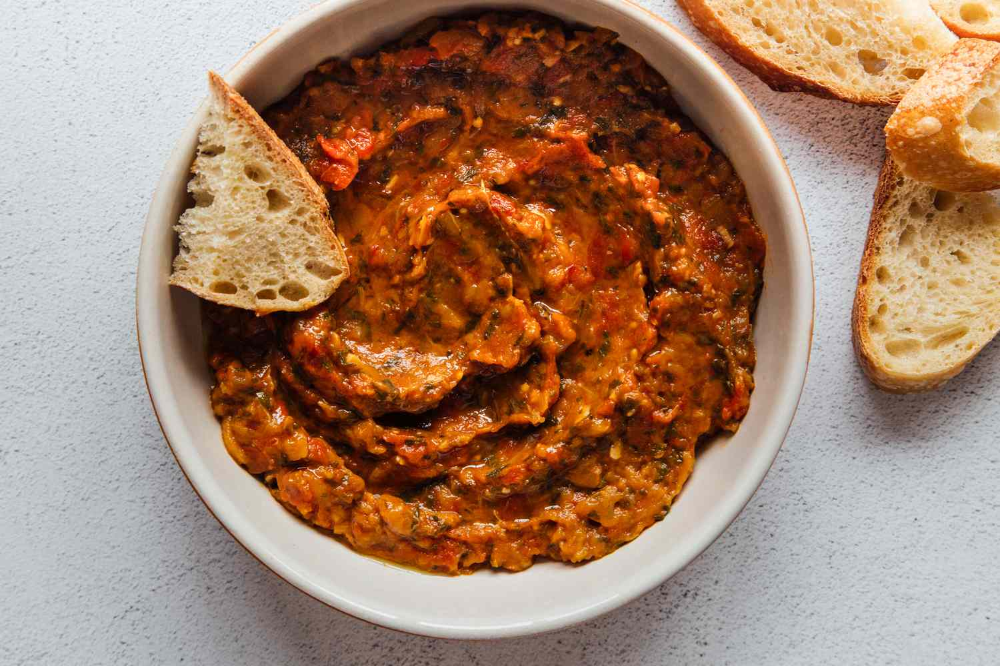

Zaalouk
Ingredients:
- 2 aubergines
- 1 tbsp olive oil
- 4 tomatoes, chopped
- 4 garlic cloves, crushed
- 3 tbsp tomato paste
- 2 tsp paprika
- 1 tsp ground cumin
- 1 tsp chilli powder
- Salt & pepper to taste
- Olive oil — a drizzle
- Fresh parsley
- Squeeze of lemon juice
- Chilli flakes (optional)
To garnish :
Instructions:
- Start off by roasting the aubergine poke a few holes throughout each aubergine with a sharp knife and brush with olive oil.
- You can either roast in a preheated 220C/200C fan/400C oven for 50-60 minutes, or I roasted them in the air fryer at 200C for 25 minutes. Allow to cool enough to handle.
- While the aubergine is roasting, heat 1 tbsp of olive oil in a large pan, then add in the tomatoes and cook on a medium heat for 5 minutes.
- Add the garlic, tomato puree, spices and season to taste with salt & pepper. Continue cooking, stirring frequently, until you have a rich tomato sauce consistency.
- Cut the top of the aubergine and peel off the skin. It should be easy to peel some bits of the skin may be a bit stubborn, but don't worry about leaving it on as you won't be able to see/taste it.
- Roughly chop the aubergine and add to the pan. continue cooking for another 10-15 minutes over a low-medium heat until the mixture thickens.
- Transfer onto a serving dish, drizzle with olive oil, a squeeze of lemon and garnish with fresh parsley and chilli flakes.
- Best served with warm bread.